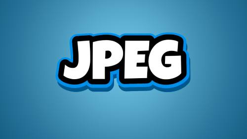
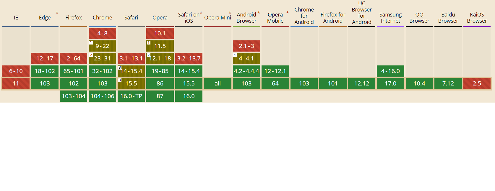

WebP — это формат файла, разработанный компанией Google в 2010 году.
Его особенностью является продвинутый алгоритм сжатия, позволяющий сократить размер картинки без видимых потерь в качестве.
WebP ― относительно новый формат графических файлов, который обеспечивает отличное сжатие изображений при сохранении качества. Чем меньше весит графика ― тем быстрее загружаются страницы сайта, это важно и для поискового продвижения, и для удобства пользователей.
В основном, владельцы сайтов на UMI.CMS используют форматы JPEG, GIF и PNG. Формат WebP — эта альтернатива, позволяющая получать качественные картинки с меньшим весом, и с версии UMI.CMS 22 система поддерживает изображения в этом формате.
В среднем вес картинок сокращается на 25–35%.
WebP — очень полезный формат изображений, поскольку он предлагает как оптимизацию производительности, так и богатый функционал.
В отличие от других форматов, WebP поддерживает сжатие как с потерями, так и без потерь, а также прозрачность и анимацию.
Файлы PNG легко редактируются и открываются в любом распространенном инструменте редактирования изображений.
PNG использует сжатие без потерь, однако это требует большего размера файла и не может сравниться с векторными изображениями.

JPEG (он же JPG) — это формат изображений, который использует сжатие с потерями и не поддерживает прозрачность.
JPG в зависимости от настроек может обеспечить сжатие как 2:1, так и 100:1 — но качество прямо пропорционально коэффициенту сжатия.
С прикладной точки зрения JPEG оптимален для изображений с большим количеством цветов, например, для фотографий.
В простейшей форме GIF (произносится как «гиф» или «джиф») - это просто файл изображения .
Подобно форматам файлов JPEG или PNG, формат GIF можно использовать для создания неподвижных изображений.
Но у формата GIF есть особенность - его также можно использовать для создания анимированных изображений.

WebP 44,4 КБ

PNG 137 КБ
JPEG 62 КБ
GIF 192 КБ
После сжатия мы увидели, что качество PNG так же стало хуже. С задачей справились JPG и WebP. Но в формате WebP изображение оказалось гораздо легче. Формат WebP оказался очень удобным и я вижу в нем только плюсы, если бы не одно НО! Далеко не все браузеры поддерживают этот формат.

Под фотографическими изображениями понимаются полноцветные фотографии, чёрно-белые фотографии, полноцветные изображения, рисунки с большим количеством разноцветных деталей. Под графикой, логотипами, иконками — графика со множеством сплошных цветов, с небольшим количеством цветов (до 256 цветов), с текстом или линиями, с прозрачностью.
|
Фотографические изображения |
Графика, логотипы, иконка |
| Лучший выбор |
WebP; JPEG (с оптимальной степенью сжатия). |
SVG; PNG; WebP. |
| Худший выбор |
GIF; SVG. |
JPEG (сжатие добавляет артефакты, смазывается текст, края линий, пропадает прозрачность). |
| Лучшее качество |
JPEG (минимальное сжатие); PNG; WebP. |
PNG; SVG; WebP. |
| Наименьший размер файла |
PEG (максимальное сжатие); WebP. |
SVG; GIF. |